sector69 supernovae (28 total)
Each figure has three panels. The top panel shows the transient light curve, the middle panel shows the local background (estimated in an annulus), and the bottom panel shows a "background-model corrected" light curve. Details about the background model are in the README.
The vertical red line marks the time of discovery reported to TNS. Other useful metadata from TNS is in the figure title.
Note that the top and bottom panel are in magnitudes, while the middle panel is in differential flux units. The magnitudes are calibrated to the flux in the reference image used for image subtraction. Thus, flux from the host galaxy is included in these magnitudes.
3-sigma upper limits are plotted as triangles with no errorbars. A typical limiting magnitude is 19.6 in 30 minutes or 18.4 in 200 seconds (for low backgrounds).
The links allow you to download the light curve data as a text file.
More details in the README.
2023utb
 2023qnz
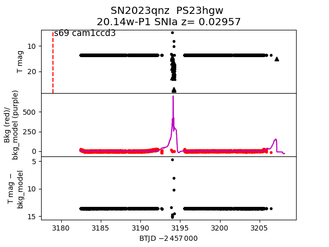
2023rmk
2023qnz
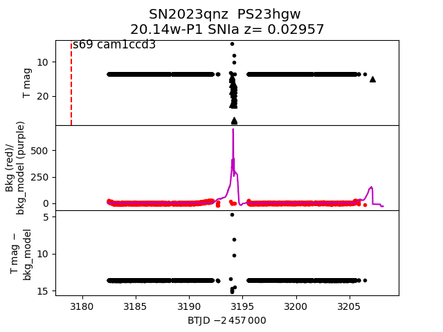
2023rmk
 2023wwx
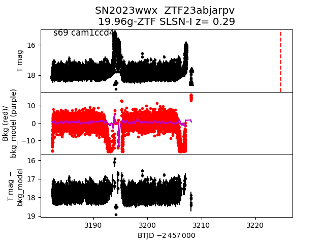
2023vlb
2023wwx
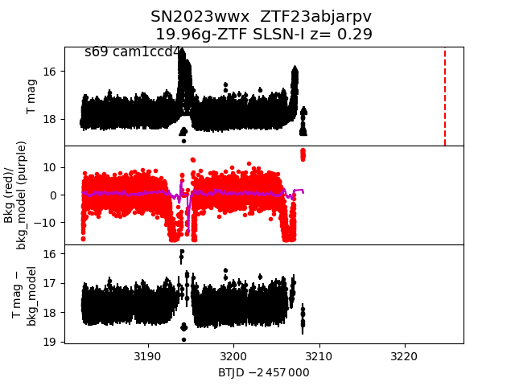
2023vlb
 2023tfc
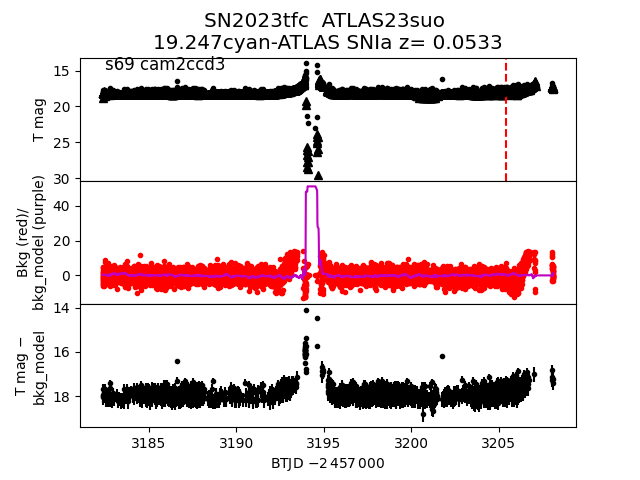
2023slz
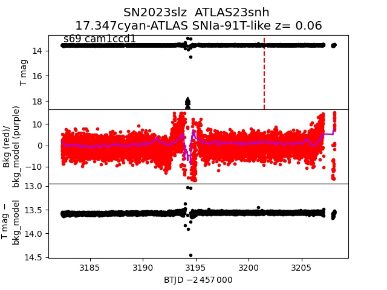
2023tml
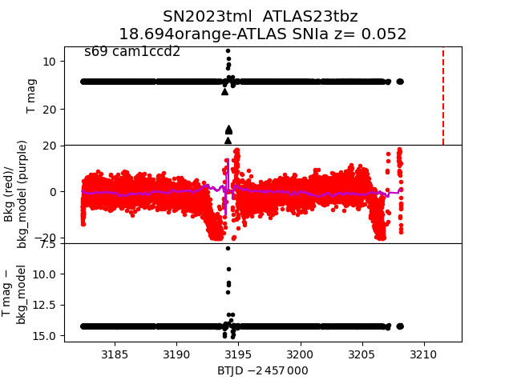
2023utm
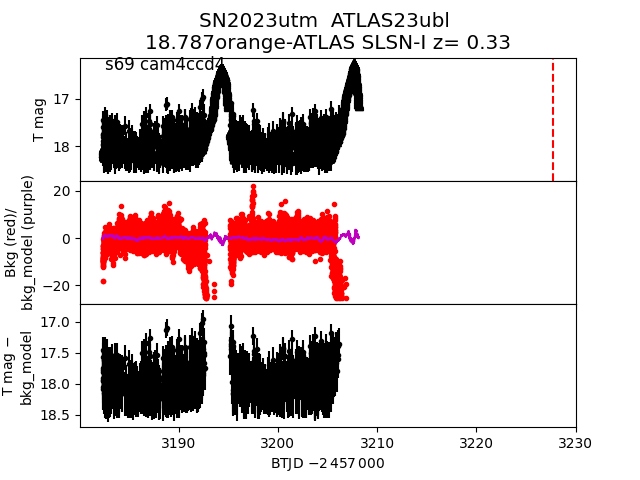
2023rnp
2023tfc
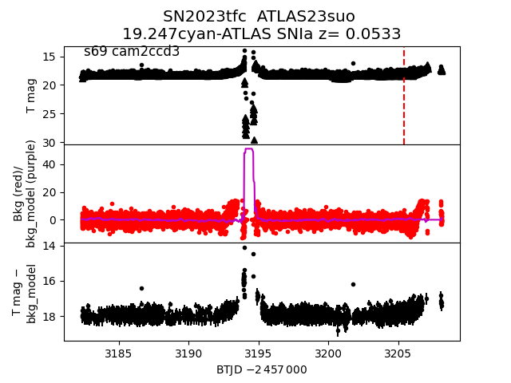
2023slz
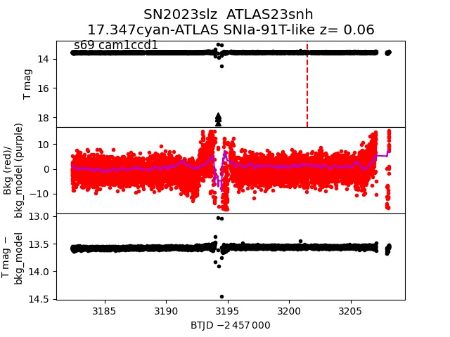
2023tml
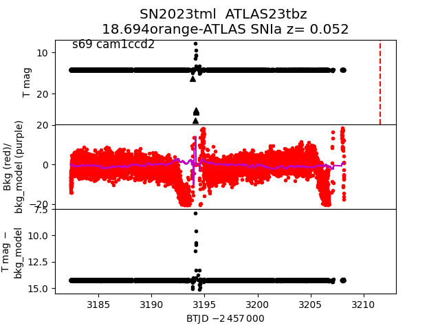
2023utm
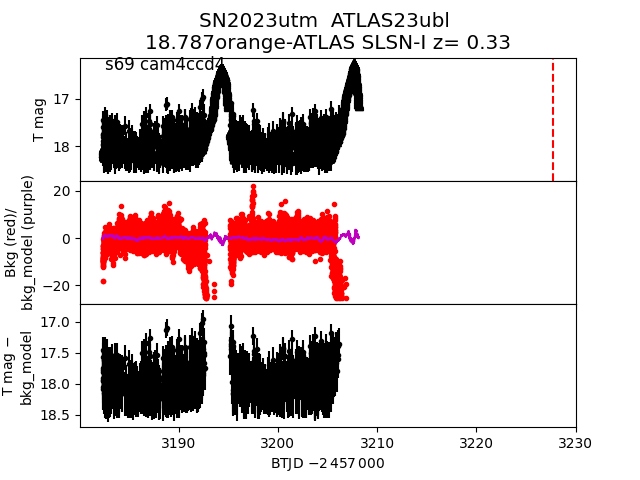
2023rnp
 2023tgz
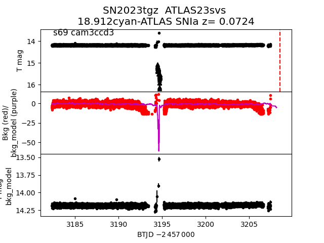
2023upo
2023tgz
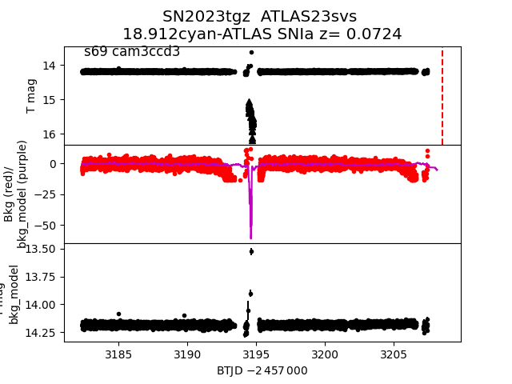
2023upo
 2023umr
2023umr
 2023txv
2023txv
 2023rfg
2023rfg
 2023tuu
2023tuu
 2023usw
2023usw
 2023qdz
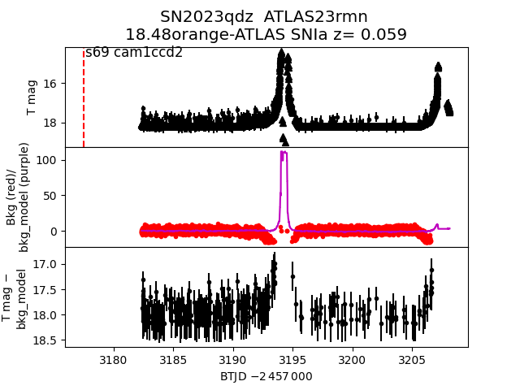
2023snj
2023qdz
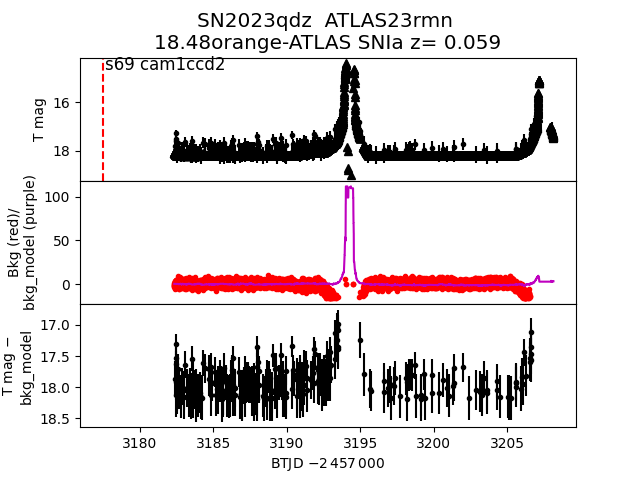
2023snj
 2023vek
2023vek
 2023tnc
2023tnc
 2023uwa
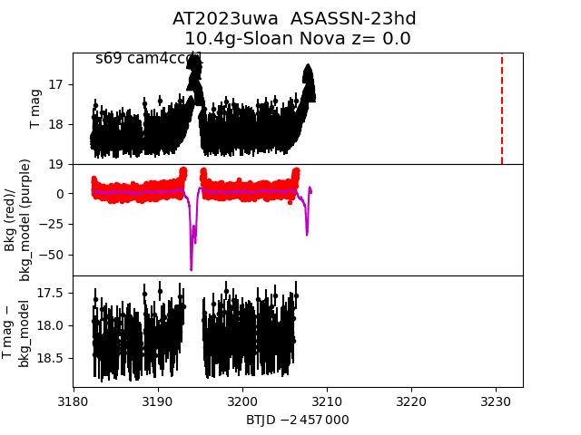
2023rff
2023uwa
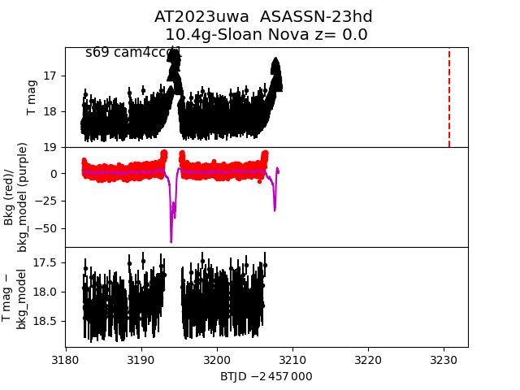
2023rff
 2023szc
2023szc
 2023qqg
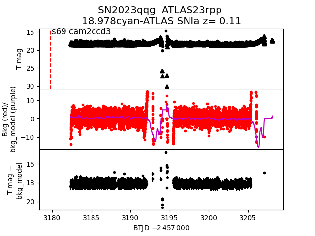
2023slk
2023qqg
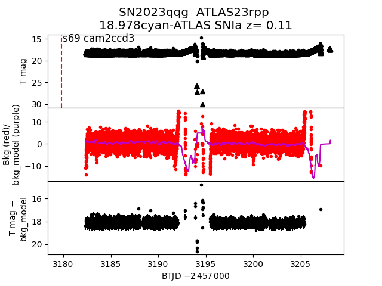
2023slk
 2023txm
2023txm
 2023sps
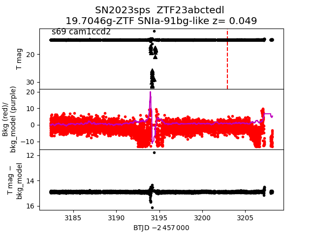
2023sps
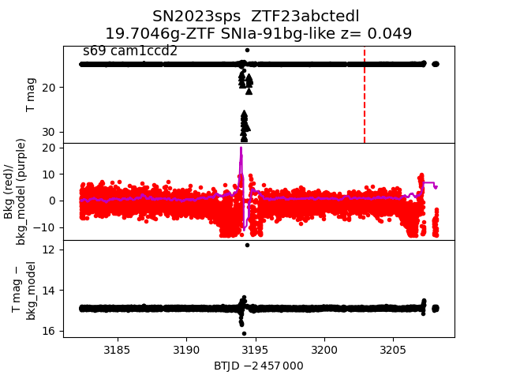